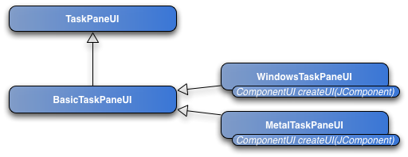
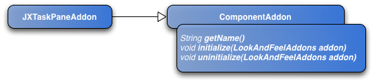
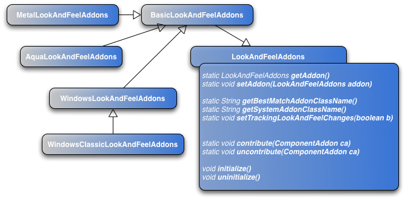

|
When you write custom components for Swing you can follow two paths, one being faster than the other
Let's suppose you have written your own component and choose to create custom pluggable UIs to match several platform look and feels. What are the means offer by Swing to transparently integrate your component and its UIs? |
How does Swing find the look and feel for a component? |
Let's say you create a new JButton instance. How does Swing find the pluggable UI to use for this button? The button will ask the UIManager for a pluggable UI matching its UI class ID (JComponent#getUIClassID()). The UIManager will look into its UIDefaults for a pluggable UI factory mapped to the UI class ID. When found, it will call the method "createUI(JComponent)" on this factory. The mapping between the UIClassID and the factory has been set by the LookAndFeel when it was installed (UIManager#setLookAndFeel()). |
Writing a custom component |
Let's consider a component named JXTaskPane. We want it to support different UIs based on the platform. To follow Swing pattern, we must define the UIClassID for our component: TaskPaneUI. public class JXTaskPane extends JPanel {
public final static String UI_CLASS_ID = "TaskPaneUI";
...
public String getUIClassID() {
return UI_CLASS_ID;
}
...
} then we have to define our ComponentUI subclass, TaskPaneUI, and its various implementation, BasicTaskPaneUI, WindowsTaskPaneUI and MetalTaskPaneUI.  If you were part of the Swing team working on a new component, you will be adding the component UIs and default (colors, fonts, borders...) to BasicLookAndFeel.java, WindowsLookAndFeel.java and MetalLookAndFeel.java but if you're there it's likely you're not in the Swing team :-) (and if you are part of the team, I'd like your feedback on this approach!) |
One possible approach |
The approach I'm proposing allows developers to write custom components, to provide defaults and pluggable UIs for these components and to integrate them within the Swing look and feel management.
For each component, you will have to write one class implementing ComponentAddon (in our case we implement JXTaskPaneAddon). You must define a name for your ComponentAddon. Use the initialize (resp. uninitialize) to register (resp. unregister) default UI and properties for your component based on the given "addon".  You notice initialize receives a LookAndFeelAddons object. This LookAndFeelAddons lives between the Swing LookAndFeel and the ComponentAddon.  PENDING(fred): the subclasses of LookAndFeelAddons may disappear in favor of new methods like "isWindows", "isMac", "isMetal" added on LookAndFeelAddons. For initialize to be called, you must register your ComponentAddon to the LookAndFeelAddons through the LookAndFeelAddons#contribute method. A typical implementation of ComponentAddon#initialize will look like: public void initialize(LookAndFeelAddons addon) {
if (addon instanceof BasicLookAndFeelAddons) {
addon.loadDefaults(new Object[]{
"TaskPaneUI", BasicTaskPaneUI.class.getName(),
"TaskPane.background", new ColorUIResource(127, 157, 128),
...
});
}
if (addon instanceof WindowsLookAndFeelAddons) {
addon.loadDefaults(new Object[]{
"TaskPaneUI", WindowsTaskPaneUI.class.getName(),
...
});
} else if (addon instanceof MetalLookAndFeelAddons) {
addon.loadDefaults(new Object[]{
"TaskPaneUI", MetalTaskPaneUI.class.getName(),
...
});
}
} Instead of checking against the current look and feel when registering your component defaults, you will check against this LookAndFeelAddons. Summary
|
Last update: June 6, 2005